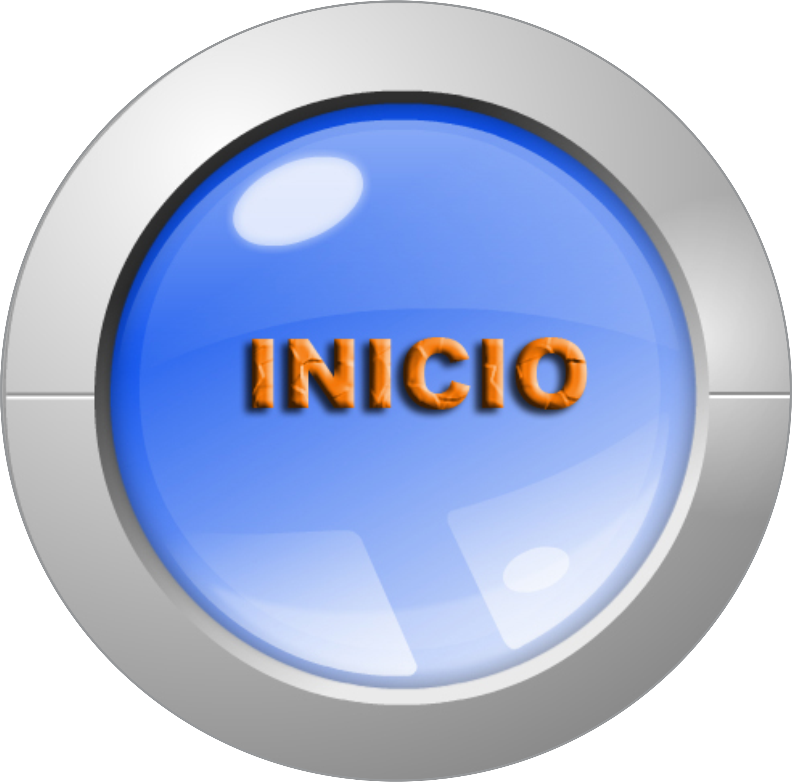
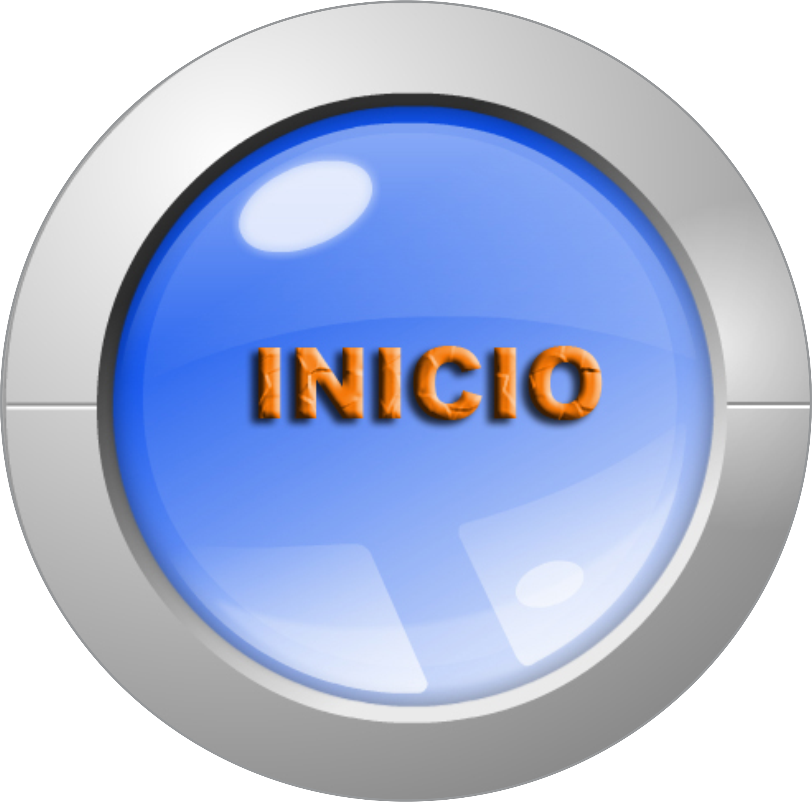

¡Hola, Bievenido a un espacio musical!

¿Quiénes somos? |
En está página web podrás encontrar instrumentos,
música, tus artístas favoritos, y entre muchas cosas más. Queremos Reconocer
los elementos básicos del lenguaje musical que permitan su análisis e
interpretación. Distinguir visual y auditivamente los instrumentos musicales
escolares, los de la orquesta y algunos de los más populares, así como las
distinas voces. |
 |
La Guitarra |
 |
La guitarra es un instrumento musical
armónico de cuerda bien templada que cuenta con una caja de resonancia para la
amplificación del sonido producido por la vibración de las cuerdas, un mástil,
un diapasón o trastero, un clavijero y un puente donde se colocan las
cuerdas. |
Intrumentos de percusión |
Un instrumento de percusión es un tipo de instrumento
musical cuyo sonido se origina al ser golpeado o agitado. Es quizá,
la forma más antigua de instrumento musical. Un instrumento de percusión
puede ser usado para crear patrones de ritmos (batería, tam-tam entre otros)
o bien para emitir notas musicales (xilófono). |
 |
Instrumentos de viento |
 |
Los instrumentos de viento o aerófonos son una familia de
instrumentos musicales los cuales se producen el sonido por la vibración de la masa de
aire en su interior, sin necesidad de cuerdas o membranas porque solo requiere de la
vibración del aire. Los aerófonos de metal producen un sonido de timbre fuerte. |
Inicio -
Registrarse -
Acerca de
Envianos un mensaje via gmail a
larravegrahanbelt@gmail.com
|